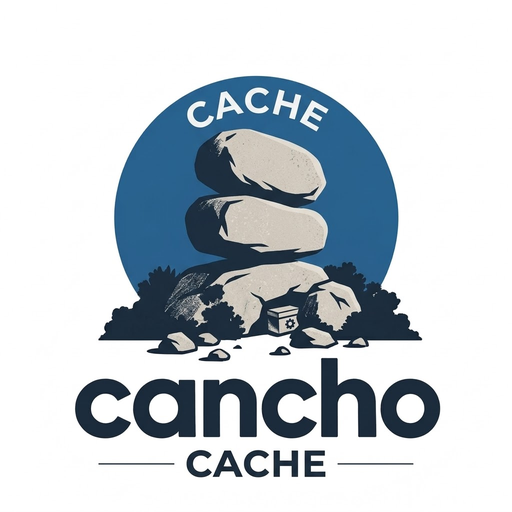

A Redis-compatible cache that says what it can do.
Written in cancho: no Ffi, no unsafe, and an authority report, checked in CI, that says it never touches the filesystem or foreign code. redis-cli, redis-py and ioredis connect and work.
$ redis-cli -p 6379 SET greeting hello EX 60 OK $ redis-cli -p 6379 TTL greeting (integer) 60 $ redis-cli -p 6379 INCRBY visits 41 (integer) 41 $ cancho authority src/*.cho --std performs: args, clock, conn_accept, conn_read, conn_write, err_write, heap, net_in(""), poll never touches: the filesystem, foreign code
Same answers as Redis
Byte-identical to Redis 7.0.15 on 334 differential cases, four framings each. RESP2 and RESP3 over TCP.
A fixed arena
Sized at start; nothing is allocated afterwards. Expiry, an approximate LRU, and a compaction whose worst pause is a slice of work, not the arena.
An authority you can read
The report lists exactly what the program may do. It is checked in CI, not assumed.

A cache should be small enough to audit.
| Question | What cancho-cache does |
|---|---|
| Can it read my files, or call into C? | No, and the authority report says so. Adding persistence later will name one directory in that report, not hide it. |
| Will a client library work? | The three tested ones connect and run a session; the handshake they send (HELLO, INFO, CLIENT) is answered the way Redis answers it. |
| Is it faster than Redis? | On one core it measures 1.07 to 2.00 times Redis's throughput on the pre-registered cells, while doing much less. It is not a claim about Redis with the same features. |
| What happens when memory is full? | noeviction refuses with Redis's own error; allkeys-lru evicts, with the same hit rate as Redis at the same resident memory. |
Every claim has a measurement, or says it has none.
The gate was fixed before the code. Where a claim turned out false, the design document was corrected in place.
The design document holds the gate, every measurement and its caveats, and each mutant the harnesses were checked against.
Where it fits.
Use it for
- A string cache with expiry and an eviction policy
- A host where the program's authority must be small and readable
- Local development and tests against a Redis-shaped server
Not yet
- Data structures beyond strings; pub/sub; scripting
- Persistence, replication, cluster, TLS
- One database; 256 connections; a 16 KiB command
Try it.
You need the cancho compiler at the revision CI uses, Rust to build it, and redis-cli to talk to it.
git clone https://github.com/alpibrusl/cancho git clone https://github.com/alpibrusl/cancho-cache && cd cancho-cache REV=$(sed -n 's/^ *CANCHO_REV: *//p' .github/workflows/ci.yml) (cd ../cancho && git checkout "$REV" && cargo build --release -p cancho) export CANCHO=$PWD/../cancho/target/release/cancho mkdir -p build $CANCHO build --std src/cache.cho src/resp.cho src/store.cho src/commands.cho src/reply.cho src/session.cho src/txn.cho src/glob.cho -o build/cache build/cache 6379 & redis-cli -p 6379 PING # PONG
Arguments: cache <port> [<arena MiB> [<most keys> [noeviction | allkeys-lru]]]. Sizes are fixed at start.
Status: alpha
- A string cache, step C2. The gaps to pairing with Redis, each with its design question and gate, are tracked in the epic.
- Not a Redis replacement: see "Not yet" above, and the Limitations in the README.